"i" - Intuitive: iCAT represents an innovative approach to light microscopy, incorporating advanced features like intuitive axial rotation and tracking. It introduces a novel solution for imaging and studying biological specimens with enhanced capabilities, pushing the boundaries of traditional microscopy techniques.
"C" - Controlled: iCAT offers precise control over specimen rotation, temperature regulation, and lighting conditions, ensuring optimal imaging conditions and experimental reproducibility.
"a" - Axial: iCAT's unique capability to rotate specimens along their axial axis sets it apart from conventional light microscopy techniques, allowing researchers to observe dynamic processes and capture detailed time-lapse sequences.
"t" - Tilt: iCAT offers the unique capability of "Controlled Axial Tilt" providing researchers with a 360-degree perspective. This groundbreaking feature empowers researchers to examine specimens in three dimensions, facilitating the exploration of dynamic cellular processes, developmental biology, and beyond.
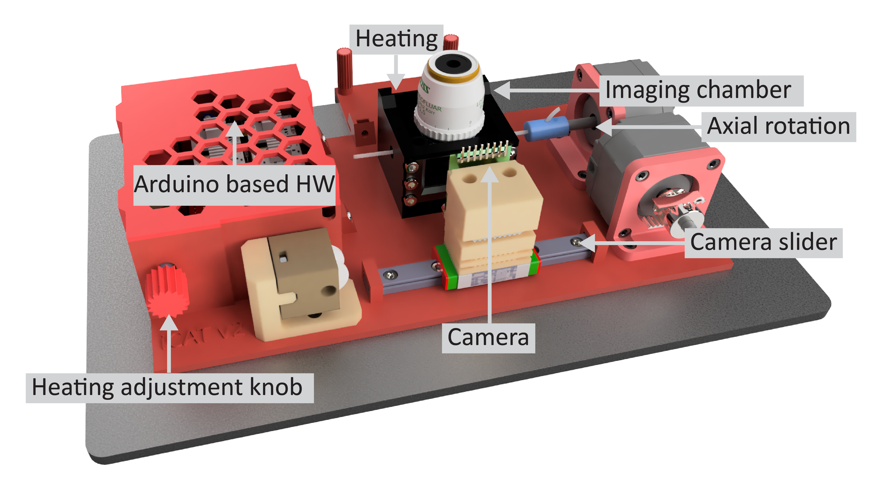
One of the key advantages of iCAT is its open-source nature, which promotes accessibility, customization, and collaborative development. The device can be fabricated using 3D printing technology, ensuring low-cost production and easy assembly. All the electrical and mechanical components required for iCAT can be readily obtained for less than $300, making it feasible for researchers with varying resources and expertise levels to replicate and utilize the device in their laboratories. For an overview of the required components, see the illustrative image and list below.
Arduino Uno Rev3, 1x
Arducam 5MP Plus OV5642, 1x
IRF520 Driver Module, 1x
CNC Shield V3, 1x
DRV8825 Stepper Motor Driver, 2x
17HS2408 Stepper Motor, 2x
Peltier plate module TEC1-12706, 1x
NTC Thermistor 10K 1% 3950, 1x
4.7 kOhm resistor, 1x
10 kOhm resistor, 1x
10K Ohm potentiometer, 1x
3W High Power LED Module LED with PCB Chassis for Arduino, 1x
12V 3A Power Supply, 1x
GT2 Pulley 16 Teeth 5mm bore 6 mm width, 1x
GT2 Idler 20 Teeth 5mm bore 3 mm width without teeth, 1x
GT2 Open Timing Belt 2mm Pitch 6mm Width, 1x
MGN9H 100mm linear guide rail with carriage, 1x
Stainless Steel DIN912 Hexagon Hex Socket Head Cap Allen Bolt Screw, M3x4 (22x), M3x5 (4x), M3x6 (8x), M3x14 (1x)
M3 hex nut, 20x
Microscope Cover Glass, 24x40mm, 10x
Lubricant in the syringe, 1x
Sleeving Cord Protector, 6-12 mm, 1x
Neodymium Magnet 5mm x 2mm, 8x
FEP tube clear 0.8 I.D./1.2 O.D., 10-25 m
FEP tube clear - other sizes, 5 m
Silicon rubber tube 1x2 mm, 3 m
Female Plug 12V DC Power Pigtail Cable Jack, 2x
Female and Male DC Connectors 2.1x5.5mm, 1x
Crimp Terminals Set Kit, 1x
Dupont Line M-M + F-M + F-F Jumper Wire 10cm, 20CM, 30x
WAGO Terminals Series Splicing Connector 221-413, 2x
Mini Solderless Prototype Breadboard, 3x
Black Jumper Caps, 2x
3D printer, 1x
3D Printer Filament 1.75mm - transparent, black, 2x
Pipette Pump 10ml, 1x
Borosilicate Glass Pasteur Pipettes, 1x
Crimping Tools SN-58B + 4 jaws, 1x
Screwdriver Set, 1x
NOTE: The complete shopping list is in the components sheet.
All 3D-printed parts can be printed using PETG or PLA filaments. To print the chamber, it is recommended to use a transparent material for the first three layers in order to be able to use the transmitted light of a microscope. For the remaining parts, black filament should be used to reduce light reflections. The individual STL and 3MF files and the complete Fusion360 project are in the 3D folder.
To assemble iCAT from individual parts, follow the instructions below. If needed, see the pinout sheet, and the wiring diagram.

Insert all M3 nuts and four neodymium magnets into both 'base' parts.
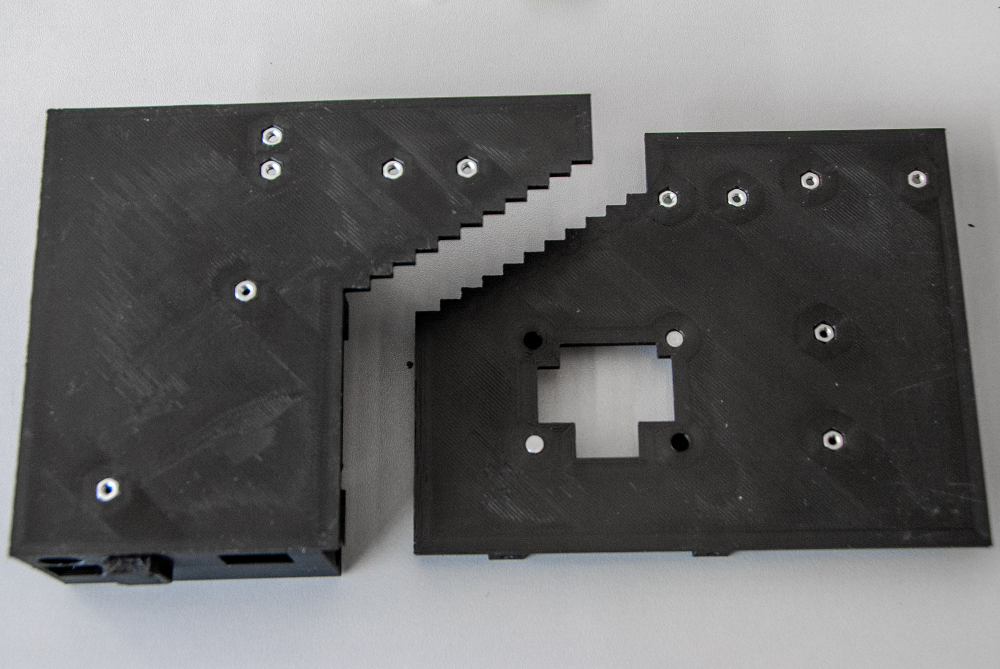
Slide the linear guide into the 'base-1', put both 'base' parts together, and secure the connection between them with two M3x6 screws. Attach the 'mounting plate' using two M3x6 screws and secure the linear guide with four M3x5 screws.
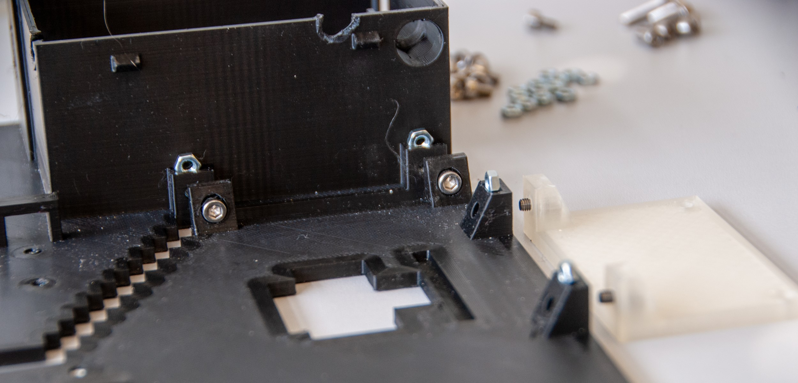

Fix the 'motor plates' to NEMA motors using eighth M3x4 screws according to the image below. Attach GT2 Pulley to one of the NEMA motor. The pin connections of this NEMA motor need to be oriented vertically.
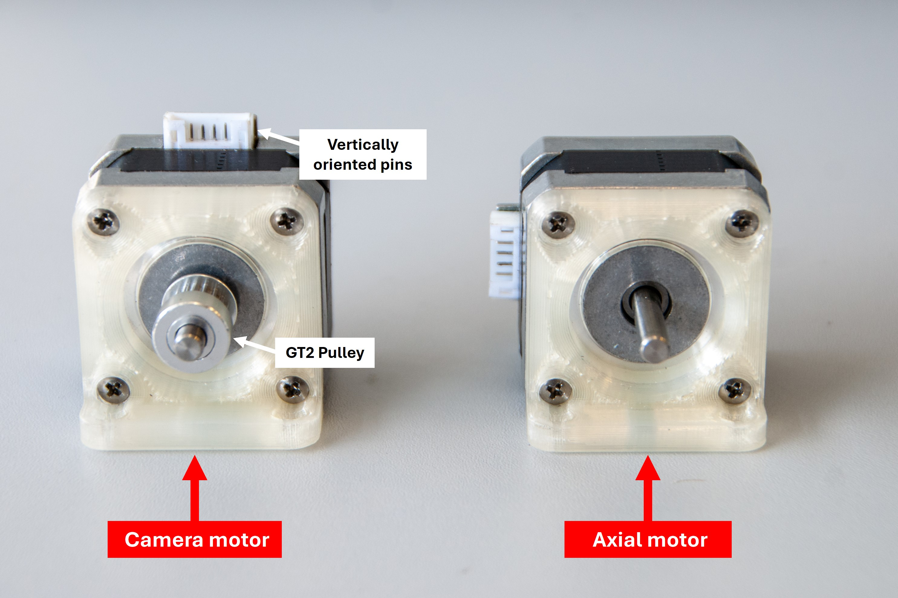
Secure the 'motor plates' on the 'base' using M3x4 screws.
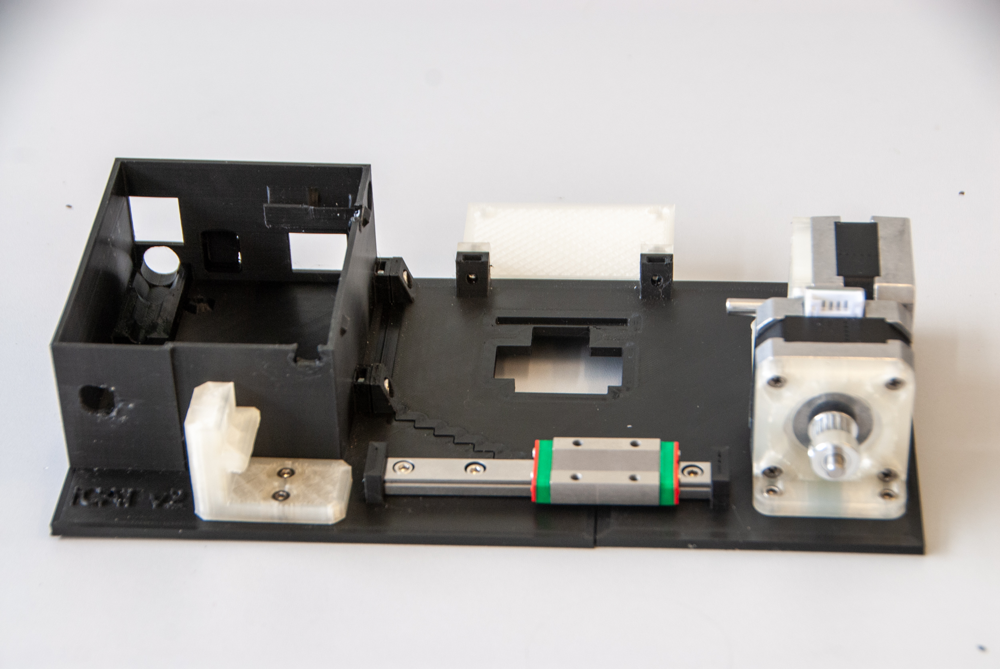
Insert three M3 nuts into the 'cargo plate-2' and attach the GT2 Idler to it using a M3x14 screw. Cut 33.5 cm of GT2 Timing Belt and pass it through the idler. Fasten the ends of the belt inside the 'cargo' according to the image below.
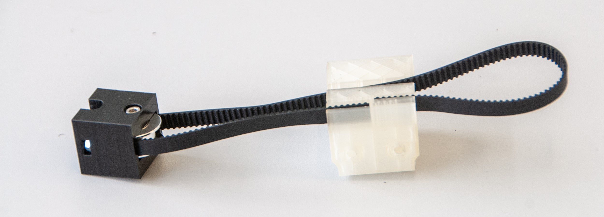
Secure the 'cargo' to the Linear Guide Carriage using two M3x4 screws and place the belt on the GT2 Pulley that was previously attached to one of the NEMA motors. Attach the 'cargo plate-2' to the 'cargo plate-1' using prepared screws. Do not overtighten these screws, otherwise the 'base' will bend.

Insert the M3x6 screws into the mounting holes of the Arduino Uno and plug the CNC shield onto the Arduino, ensuring that the pins are properly aligned with the corresponding headers. To adjust micro-stepping (1/16 step), set up the M2 pin of the CNC Shield HIGH by connecting the black jumper caps, as shown in the image below. Attach the DRV8825 Stepper Motor Drivers to the CNC Shield and connect the power supply wires to both the shield and the WAGO terminals.
NOTE: Before proceeding any further, the voltage reference (VREF) that corresponds to the maximum current that will flow to the stepper motors needs to be set. The maximum current of used steeper motors is 1.8 A. To calculate the Vref, use this equation:
VREF = Imax/2
VREF = 1.8/2 = 0.9 V
In order to set up the Vref, plug in the Arduino UNO with CNC Shield and the DRV8825 Stepper Motor Drivers to the USB port, connect the negative probe of the multimeter to the GND, connect the positive probe of the multimeter to the screwdriver tip, set the multimeter to DC Voltage measurement, and use the screwdriver to turn the potentiometer until you get the calculated voltage.
Similarly to the previous step, interconnect the WAGO terminals with the IRF520 Driver Module using additional power wires. Next, connect the wire end of the first Pigtail Cable Jack to the WAGO terminals. The wire end of the other Pigtail Cable Jack needs to be connected to the IRF520 Driver Module. If needed, crimp the ends of any wires.

Attach the Ardunio UNO coupled with the CNC Shield and all the wirings to the 'base' using previously inserted screws.

Install wiring components on three mini breadboards according to the image below. First, plug 10 kOhm resistor into the 'Thermistor' breadboard. Shorten the resistor leads, if necessary. Plug 10 kOhm thermistor, while one of its leads connects it with the resistor. Connect the Male-Female Dupont wire to it. This will be connected to the analog input ('Abort' pin) on the CNC shield later on. The other Dupont wires need to be connected to the other thermistor lead (ground) and to the second resistor lead (5 V). Second, prepare the 'Trigger IN' breadboard by plugging a 4.7 kOhm resistor into it and connecting its terminals to the Male DC connector. Dupont wires will be connected to both of these resistor leads later on (step 14) to the ground and to the analog input ('Hold' pin) on the CNC Shield. Third, plug 10 kOhm potentiometer into the last breadboard. Two Dupont wires will be connected to the side and the middle terminals later on, connecting it to PWM digital input ('Step Y' pin of the CNC shield) and to the IRF520 Driver Module signal input. If needed, crimp the ends of any wires.

Install the 'Potentiometer' breadboard and DC Female pigtail in to the 'base' and cover it with the 'base adapter'.

Install the 'Trigger IN' breadboard and fit Male DC connector in the 'base adapter'.
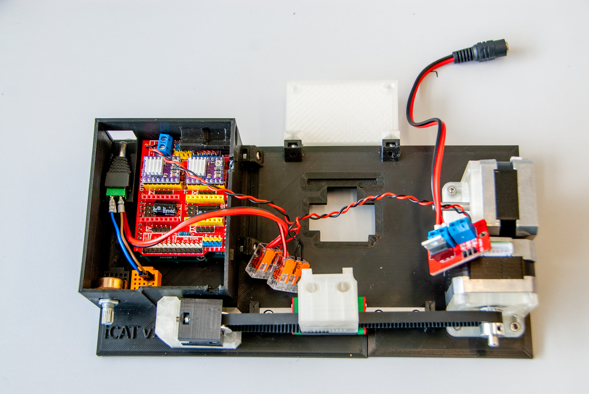
Install the IRF520 Driver Module and plug its Dupont wires (ground, 5 V). Plug the signal input as described in step 10. Fit Male DC connector connected to IRF520 Module in the upper right corner of the 'base'. Secure the potentiometer by its nut and attach the 'knob' to it.

Install the 'Thermistor' breadboard in the 'base'. Connect Dupont wires of all the breadboards as described in step 10. Connect LED to 5 V, ground, and digital output ('Dir Y' pin) on the CNC Shield. Plug eight Dupont wires to the Arducam and connect them to the CNC Shield according to the pinout sheet and the wiring diagram. Test the functionality of the device at this point before attaching the 'lid'.
 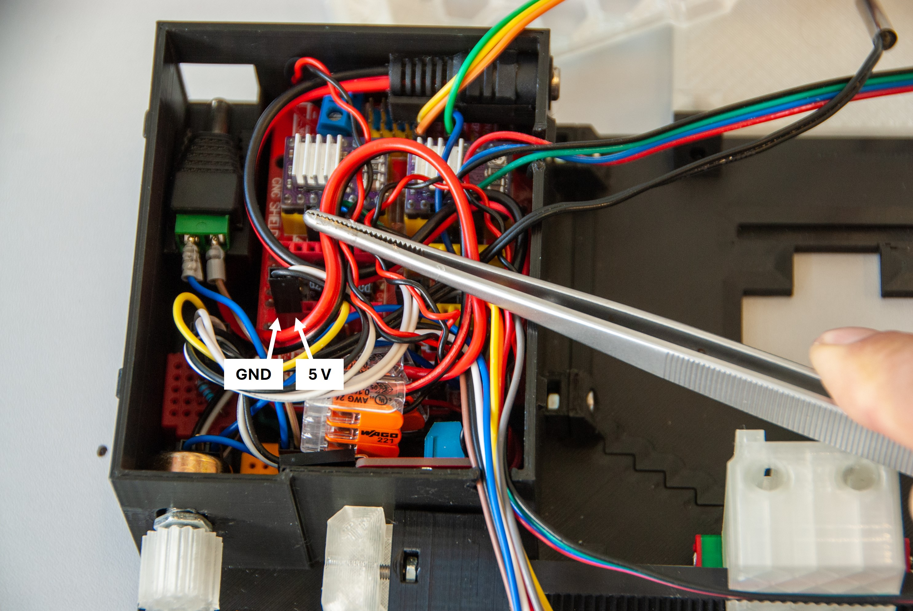
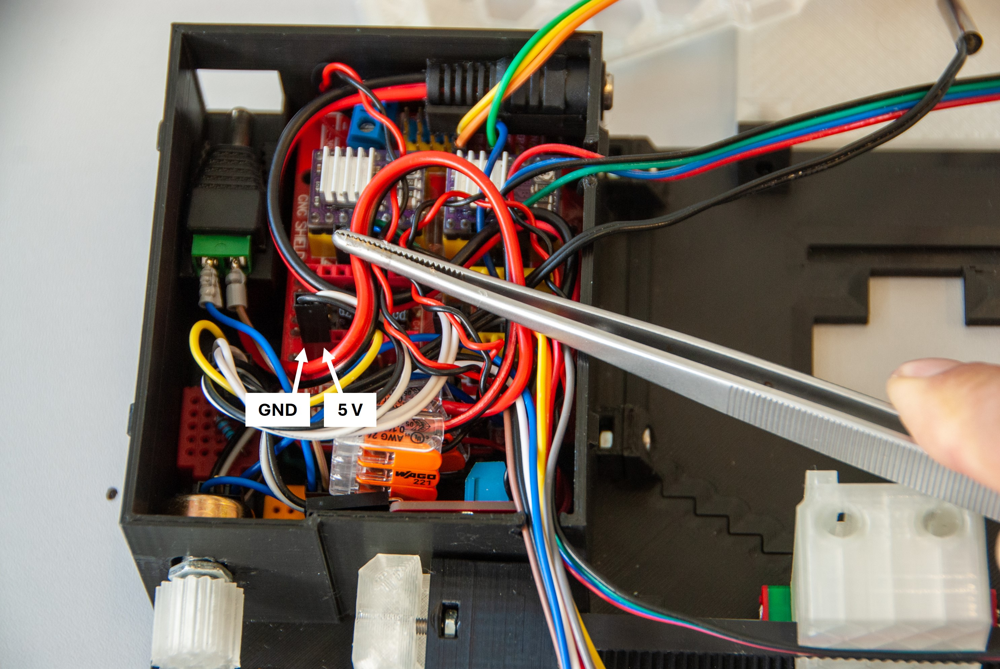
NOTE: It is possible to use 5 V and GND pins of unoccupied driver bays on the CNC Shield to connect the IRF520 Driver Module and the thermistor.
Attach the 'lid' to the 'base' and attach Arducam to the 'cargo' using two M3x4 screws. Install a Sleeving Cord Protector to cover the wiring of the camera.
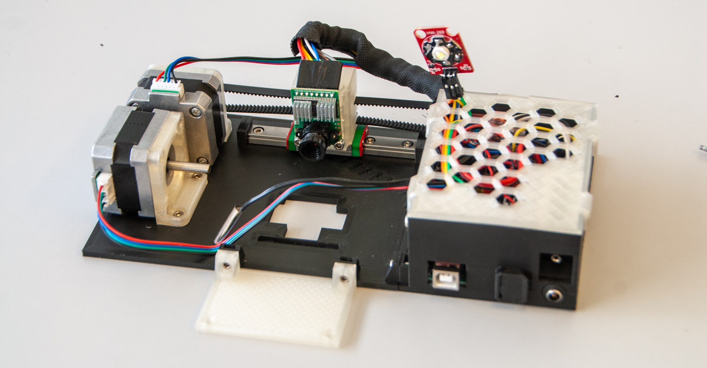
Use 'mounting screws' to connect the iCAT's 'mounting plate' to the stage of the microscope.
To install the 'cover' on the sample 'chamber', follow these steps:

 NOTE: After the initial assembly, test the chamber by filling it with water and letting it stand overnight. There should be no leaks.
NOTE: After the initial assembly, test the chamber by filling it with water and letting it stand overnight. There should be no leaks.  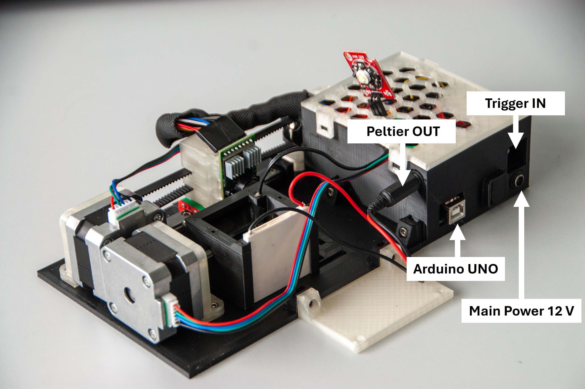
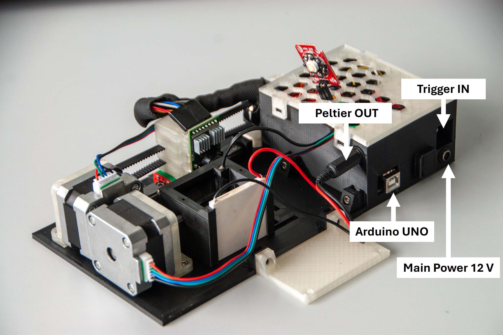 main.pde Processing sketch, and install the Processing application. Alternatively, you can download the Processing sketch folder and run iCAT.exe file directly, without needing to install Processing. iCAT.exe file directly, you will need to install OpenJDK17, as the Processing sketch folder does not contain Java. main.ino file. Next, go to the Library Manager and install the AccelStepper and ArduCAM libraries. Once both libraries are installed, press the 'Verify' button to ensure the installation is successful. memorysaver.h file by hovering the mouse over its name at row 5 in the line #include "memorysaver.h". Then navigate to its folder and replace it with the memorysaver.h file provided, which has the camera definition uncommented: #define OV5642_MINI_5MP_PLUS main.pde and click on the arrow in the upper left corner, this will open the Graphical User Interface (GUI) of the iCAT. 
These instructions can be used to mount and image zebrafish embryos between 0 – 4 dpf using iCAT and Zeiss AxioExaminer microscope equipped with LSM900 confocal scan head. Other specimens can be imaged as well. If needed, simply use larger FEP tubes to image larger samples. In such a case, however, the chamber needs to be modified. Using the iCAT in combination with other upright microscopes should be possible however this has not been tested.


main.pde Processing sketch by increasing or decresing peltPower parameter. Similar to the adjustment knob, decreasing this value reduces the heating power, while increasing it raises the Peltier output.if(valueDiff <0 ) {
peltPower = 5;
output.println();
output.printf("%02d:%02d:%02d ", hour, min, sec);
println("heating OFF");
peltColor = color(background4);
write(peltPower, 0, 3);
}
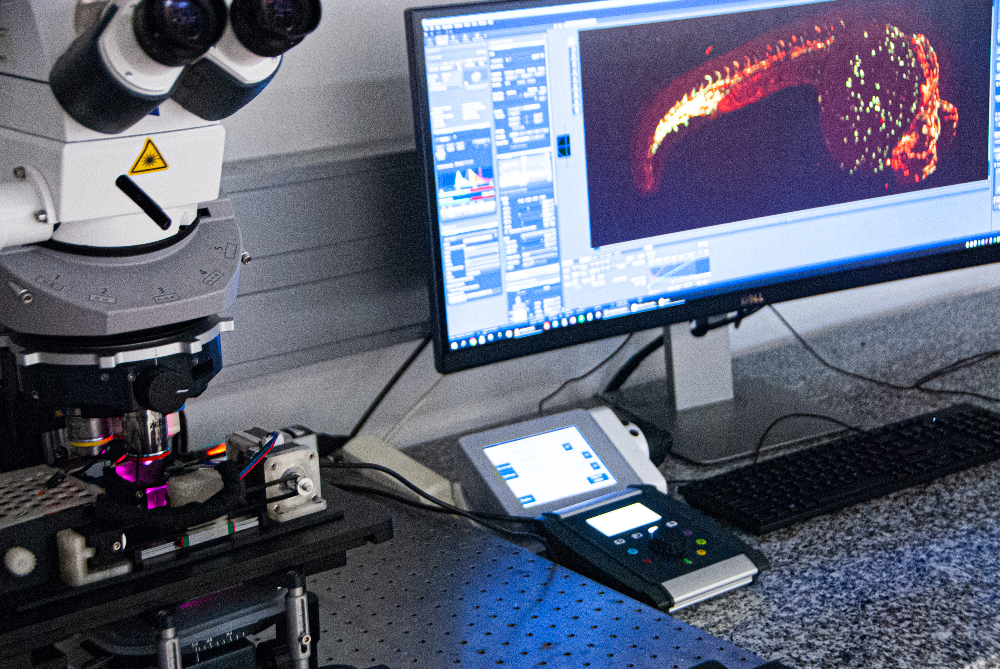